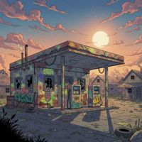 | 1 Benzínka
packages/server/seed/karty/benzinka.jpg | Karty – Lokality | 3 | Jasné slnko na pastelovej ružovej oblohe, pestré graffiti, takmer denná scéna; vôbec nie šero. | – | prerobiť |
| 2 Sypač
packages/server/seed/karty/kulturista.jpg | Karty – Občania | 3 | Superhrdinská anatómia (prehnané svaly), plochá čistá kresba, kužeľ svetla zo žiarovky; nesedí s realistickými proporciami. | – | prerobiť |
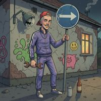 | 3 Vandal
packages/server/seed/karty/vandal.jpg | Karty – Občania | 3 | Najviac uteká: pastelová, plochá kresba bez zrna a tieňov, detské graffiti (smajlík, prasiatko), tvár ako z detského komiksu. | – | prerobiť |
| 4 Svätý text
packages/server/seed/karty/svaty_text.jpg | Karty – Nástroje | 2 | Šikmý kužeľ svetla (spotlight) dopadá na Bibliu – presne to, čo pravidlo 5 zakazuje; plochý čierny fond. | Kužeľ svetla na predmete | prerobiť |
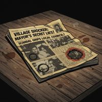 | 5 Noviny
packages/server/seed/karty/noviny.jpg | Karty – Nástroje | 1 | Čistejšia zátišná kresba; na novinách veľké čitateľné titulky „VILLAGE SHOCKER: MAYOR’S SECRET LIES!“. | Nápisy v obraze (titulky) | prerobiť |
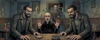 | 6 Pás 02-ako-sa-vyhrava
apps/web/src/stranky/pravidla-obrazky/02-ako-sa-vyhrava.jpg | Pásy pravidiel | 1 | Štýl v norme; dvaja hráči po stranách sú zrkadlové kópie toho istého muža. | Klony postáv | prerobiť |
| 7 Dievčina na vydaj
packages/server/seed/karty/dievcina_na_vydaj.jpg | Karty – Občania | 2 | Sýta červeno-zelená kasínová paleta, svietiace tabule v pozadí (proti „no neon signs“) a dva kužele svetla zhora. | Neónové tabule (jadro štýlu: no neon signs) | doladiť |
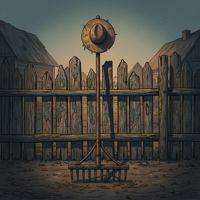 | 8 Hrable
packages/server/seed/karty/hrable.jpg | Karty – Nástroje | 2 | Zvláštny predmet: hrable stoja kolmo na zubách s klobúkom navrchu, prázdna scéna bez príbehu. | Nezmyselný predmet (hrable stoja samy, klobúk) | doladiť |
| 9 Predavačka
packages/server/seed/karty/predavacka.jpg | Karty – Občania | 2 | Nová karta: tenká linka, ploché vyfarbenie, studená sivomodrá paleta bez hlbokých tieňov; obrázok je mäkší ako vzory. | Pseudo-nápisy (nečitateľné etikety fliaš, písmo v zošite) – mierne | doladiť |
| 10 Zrkadlo
packages/server/seed/karty/zrkadlo.jpg | Karty – Nástroje | 2 | Zrkadlo samo svieti – svetlý kruh v strede predmetu pôsobí ako reflektor. | Kruh svetla na predmete | doladiť |
| 11 Dohadzovačka
packages/server/seed/karty/dohadzovacka.jpg | Karty – Občania | 2 | Kreslená „cartoon“ tvár (okuliare, medzera v zuboch), plochý svetlý interiér, kužeľ svetla zhora. | – | doladiť |
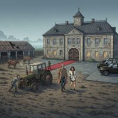 | 12 Družstvo
packages/server/seed/karty/druzstvo.jpg | Karty – Lokality | 2 | Ploché sivé denné svetlo, drobné postavy, chýba teplý akcent a zrno. | – | doladiť |
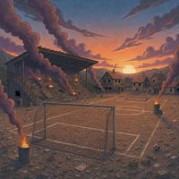 | 13 Ihrisko
packages/server/seed/karty/ihrisko.jpg | Karty – Lokality | 2 | Sýty oranžovo-ružový západ slnka, pestrá obloha (dym z horiacich košov má zdroj). | – | doladiť |
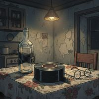 | 14 Izolačka
packages/server/seed/karty/pistalka.jpg | Karty – Nástroje | 2 | Nový obrázok: bledá sivozelená kuchyňa, tenká linka, nízky kontrast, chýba hrubá čierna kontúra aj sýty akcent; pôsobí ako iný model. | – | doladiť |
| 15 Kultúrny dom
packages/server/seed/karty/kulturny_dom.jpg | Karty – Lokality | 2 | Presvetlená architektonická kresba, veľké svietiace okná, plochá ilustrácia. | – | doladiť |
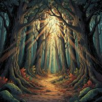 | 16 Lesná cesta
packages/server/seed/karty/lesna_cesta.jpg | Karty – Lokality | 2 | Rozprávkové lúče slnka, sýta zelená a oranžová; vyzerá ako fantasy, nie dedina. | – | doladiť |
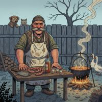 | 17 Mäsiar
packages/server/seed/karty/masiar.jpg | Karty – Občania | 2 | Ploché sivomodré denné svetlo bez hĺbky tieňov, karikatúra bez zrna. | – | doladiť |
| 18 Opatrovateľka
packages/server/seed/karty/opatrovatelka.jpg | Karty – Občania | 2 | Iný filter: hrubá tmavá vinetácia okrajov, hladké vyfarbenie, „retro“ dojem, ktorý v sade nie je. | – | doladiť |
| 19 Policajtka
packages/server/seed/karty/policajtka.jpg | Karty – Občania | 2 | Svetlá pastelová paleta (ružové tepláky, bledomodrá), plochá kresba, takmer denná scéna. | – | doladiť |
| 20 Predsedova vila
packages/server/seed/karty/predsedova_vila.jpg | Karty – Lokality | 2 | Svetlý teplý interiér bez hlbokých tieňov, plochá kresba. | – | doladiť |
| 21 Profesionálny tipér
packages/server/seed/karty/profesionalny_tiper.jpg | Karty – Občania | 2 | Výrazný kužeľ svetla na postavu, hladká digitálna linka, prázdne pozadie. | – | doladiť |
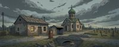 | 22 Pás 14-lokality
apps/web/src/stranky/pravidla-obrazky/14-lokality.jpg | Pásy pravidiel | 2 | Denná studená sivomodrá krajina bez teplého akcentu a bez postáv, plochá. | – | doladiť |
| 23 Silná, nezávislá žena
packages/server/seed/karty/silna_nezavisla_zena.jpg | Karty – Občania | 2 | Denné svetlo, pastelové prádlo, hladká čistá linka bez zrna; pôsobí ako iný komiks. | – | doladiť |
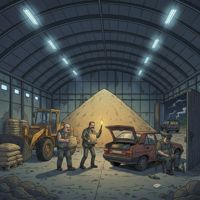 | 24 Sklad
packages/server/seed/karty/sklad.jpg | Karty – Lokality | 2 | Studené žiarivky a modrošedá hala, chýba teplé svetlo; najchladnejšia lokalita. | – | doladiť |
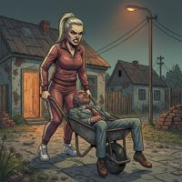 | 25 Snúbenica
packages/server/seed/karty/snubenica.jpg | Karty – Občania | 2 | Čistá digitálna linka bez zrna, ploché vyfarbenie, sivé súmračné svetlo; nová dávka z API. | – | doladiť |
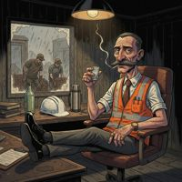 | 26 Vedúcko
packages/server/seed/karty/veducko.jpg | Karty – Občania | 2 | Nová karta: tenká linka a mäkké ploché tiene, pozadie z rozmazaných čiernych ťahov; satira (nohy na stole, robotníci v daždi za oknom) funguje. | – | doladiť |
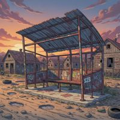 | 27 Zastávka
packages/server/seed/karty/zastavka.jpg | Karty – Lokality | 2 | Pastelový ružový súmrak, svetlá plochá scéna. | – | doladiť |
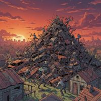 | 28 Zberný dvor
packages/server/seed/karty/zberny_dvor.jpg | Karty – Lokality | 2 | Sýty ružovo-oranžový západ slnka, veľkomestské pozadie; svetlejšie ako vzory. | – | doladiť |
| 29 avatar-05
packages/server/seed/avatary/avatar-05.jpg | Avatary | 2 | Presvetlené žlté pozadie dverí, najsvetlejší avatar, plochý. | – | doladiť |
| 30 Anonymný alkoholik
packages/server/seed/karty/anonymny_alkoholik.jpg | Karty – Občania | 1 | Štýl sedí, ale oblaky dymu sa vznášajú v miestnosti bez viditeľnej cigarety či iného zdroja. | Dym bez zdroja | doladiť |
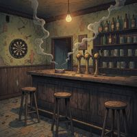 | 31 Krčma
packages/server/seed/karty/krcma.jpg | Karty – Lokality | 1 | Štýl v norme; pramienky dymu ťahajú aj zo stropu vľavo, nielen z popolníka. | Dym čiastočne bez zdroja | doladiť |
| 32 Nealko
packages/server/seed/karty/nealko.jpg | Karty – Nástroje | 1 | Zátišie sedí; na fľaši čitateľná etiketa „NON-ACHOLIC GINGER ALE“ (aj s preklepom). | Nápis v obraze (etiketa) | doladiť |
| 33 Praudovravec
packages/server/seed/karty/praudovravec.jpg | Karty – Občania | 1 | Štýl sedí, ale plagáty nesú čitateľný text „NO VACCINE“, „THEY ARE WATCHING“. | Nápisy v obraze (plagáty) | doladiť |
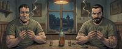 | 34 Pás 01-co-je-naex
apps/web/src/stranky/pravidla-obrazky/01-co-je-naex.jpg | Pásy pravidiel | 1 | Štýl v norme; dvaja hráči sú takmer klony (rovnaké olivové tričko, postava, póza, karty). | Klony postáv (mierne) | doladiť |
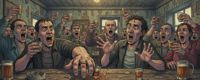 | 35 Pás 07-pitka-a-naex
apps/web/src/stranky/pravidla-obrazky/07-pitka-a-naex.jpg | Pásy pravidiel | 1 | Štýl v norme; dav rúk s pohármi je chaotický, niektoré ruky nemajú jasné telo. | Zložité ruky (mierne) | doladiť |
| 36 Veľmi smútiaca vdova
packages/server/seed/karty/velmi_smutiaca_vdova.jpg | Karty – Občania | 1 | Štýl sedí, ale náhrobok nesie čitateľný anglický nápis „BELOVED HUSBAND, REST IN PEACE“. | Nápis v obraze (náhrobok) | doladiť |
| 37 Vychovávateľka
packages/server/seed/karty/vychovavatelka.jpg | Karty – Starešinovia | 1 | Štýl sedí, ale na tabuli je čitateľný anglický text („2+2=5“, „impossible!“). | Nápis v obraze (tabuľa) | doladiť |
| 38 Šofér
packages/server/seed/karty/sofer.jpg | Karty – Občania | 1 | Štýl sedí; ženy v dave za ním majú takmer rovnakú tvár a účes. | Klony v pozadí (mierne) | nechať |
| Bzdocha
packages/server/seed/karty/klebetnica.jpg | Karty – Občania | 1 | Hladšia kresba, studenšia; v norme. | – | nechať |
| Cirhóza
packages/server/seed/karty/cirhoza.jpg | Karty – Kliatby | 1 | Studenšia nemocničná paleta, čistejšia linka; v norme. | – | nechať |
| Degustátorka
packages/server/seed/karty/degustatorka.jpg | Karty – Občania | 1 | Kužeľ svetla z lampy na postavu, o niečo plochšia; inak sedí. | – | nechať |
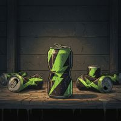 | Energeťák
packages/server/seed/karty/energetak.jpg | Karty – Nástroje | 1 | Toxicky zelené plechovky ako jediná farba, stredový svetlý bod; v norme. | – | nechať |
| Farár
packages/server/seed/karty/farar.jpg | Karty – Starešinovia | 1 | Vzor; svätožiara lúčov z vitráže za hlavou je na hrane pravidla o kuželi svetla, ale satiricky funguje. | – | nechať |
| Finančná poradkyňa
packages/server/seed/karty/financna_poradkyna.jpg | Karty – Občania | 1 | Vzorová karta, ale obrázok v seede nezodpovedá vzorovému promptu (sivé tepláky namiesto pásikavého blejzra a maskáčov); na zmluve drobné písmo. | – | nechať |
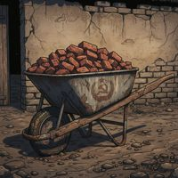 | Fúrik
packages/server/seed/karty/furik.jpg | Karty – Nástroje | 1 | Zátišie, v norme. | – | nechať |
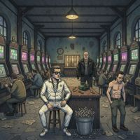 | Herňa
packages/server/seed/karty/herna.jpg | Karty – Lokality | 1 | Svietiace obrazovky automatov sú na hrane „no neon“; inak v norme. | – | nechať |
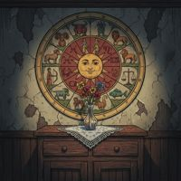 | Horoskop
packages/server/seed/karty/horoskop.jpg | Karty – Nástroje | 1 | Svetlejšia, dekoratívna; v norme. | – | nechať |
| Hrobár
packages/server/seed/karty/hrobar.jpg | Karty – Starešinovia | 1 | Sýta fialovo-oranžová obloha súmraku, trochu pestrejšia než vzory. | – | nechať |
| Injekcia
packages/server/seed/karty/lievik.jpg | Karty – Nástroje | 1 | Nový obrázok (predtým odchýlka 2): teplá pivnica s pavučinami, zrno, demižón a striekačka správne; linka o niečo tenšia a vyfarbenie mäkšie než vzory. | – | nechať |
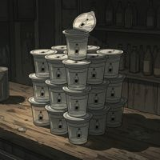 | Jogurt
packages/server/seed/karty/jogurt.jpg | Karty – Nástroje | 1 | Zátišie, v norme. | – | nechať |
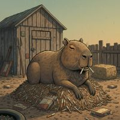 | Kapybara
packages/server/seed/karty/kapybara.jpg | Karty – Zvieratá | 1 | Hladšia, mäkšia kresba s menej zrnom; v norme. | – | nechať |
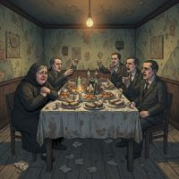 | Kar
packages/server/seed/karty/kar.jpg | Karty – Lokality | 1 | V norme. | – | nechať |
| Krabička cigariet
packages/server/seed/karty/cigorky.jpg | Karty – Nástroje | 1 | Šikmý pruh svetla, zátišie; v norme. | – | nechať |
| Krištáľová guľa
packages/server/seed/karty/kristalova_gula.jpg | Karty – Nástroje | 1 | Žiara gule je prirodzená súčasť predmetu; v norme. | – | nechať |
| Krokodíl
packages/server/seed/karty/krokodil.jpg | Karty – Zvieratá | 1 | O niečo hladšia kresba, svetlejšie pozadie; v norme. | – | nechať |
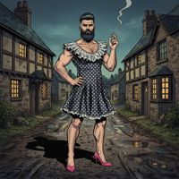 | Liberál
packages/server/seed/karty/liberal.jpg | Karty – Občania | 1 | Svetlejšia ulica, mierne pestrejšia; v norme. | – | nechať |
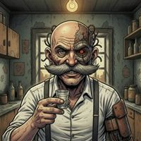 | Melichar
apps/web/public/melichar.jpg | Melichar / výučba | 1 | Polorobot (zámer), štýlom zodpovedá botom a avatarom. | – | nechať |
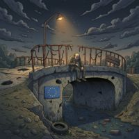 | Most
packages/server/seed/karty/most.jpg | Karty – Lokality | 1 | V norme; vlajka EÚ ako satira. | – | nechať |
| Obecný úrad
packages/server/seed/karty/obecny_urad.jpg | Karty – Lokality | 1 | Biela fasáda v daždi, studená; v norme. | – | nechať |
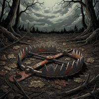 | Pasca
packages/server/seed/karty/pasca.jpg | Karty – Nástroje | 1 | Sedí, studenšie. | – | nechať |
| Pozadie abstinent
packages/server/seed/bodovanie/pozadia/abstinent.jpg | Pozadia bodovacích kariet | 1 | Pozadie bodovacej karty: prázdna sivozelená stena, mäkšia tenká linka; ako podklad pod text v norme. | – | nechať |
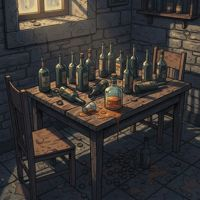 | Pozadie alkoholik
packages/server/seed/bodovanie/pozadia/alkoholik.jpg | Pozadia bodovacích kariet | 1 | Pozadie: stôl s fľašami, kameň, svetlo z okna; tenšia linka, v norme. | – | nechať |
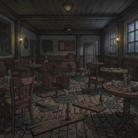 | Pozadie bitkar
packages/server/seed/bodovanie/pozadia/bitkar.jpg | Pozadia bodovacích kariet | 1 | Pozadie: rozbitá krčma, tlmené; v norme. | – | nechať |
| Pozadie exekutor
packages/server/seed/bodovanie/pozadia/exekutor.jpg | Pozadia bodovacích kariet | 1 | Pozadie: sklad zabavených vecí, studenšie; v norme. | – | nechať |
| Pozadie fajciar
packages/server/seed/bodovanie/pozadia/fajciar.jpg | Pozadia bodovacích kariet | 1 | Pozadie: mohutné kúdoly dymu, ale zo zdroja (popolník s cigaretami); v norme. | – | nechať |
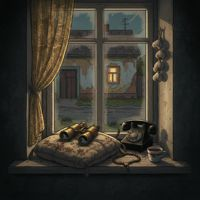 | Pozadie ohovaracka
packages/server/seed/bodovanie/pozadia/ohovaracka.jpg | Pozadia bodovacích kariet | 1 | Pozadie (nové 6. 11.): okno, ďalekohľad, telefón; o niečo svetlejšie, v norme. | – | nechať |
| Pozadie veriaci
packages/server/seed/bodovanie/pozadia/veriaci.jpg | Pozadia bodovacích kariet | 1 | Pozadie: lúče z vitráže padajú na podlahu – na hrane pravidla 5 (nie na predmete). | – | nechať |
| Pozadie vypalnik
packages/server/seed/bodovanie/pozadia/vypalnik.jpg | Pozadia bodovacích kariet | 1 | Pozadie: obchod s váhou a pokladňou, studené kachličky; v norme. | – | nechať |
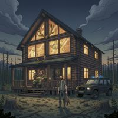 | Poľovnícka chata
packages/server/seed/karty/polovnicka_chata.jpg | Karty – Lokality | 1 | V norme. | – | nechať |
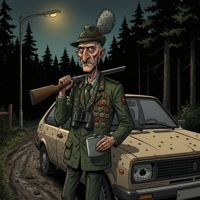 | Poľovník
packages/server/seed/karty/polovnik.jpg | Karty – Občania | 1 | Nová karta: noc, les, lampa, satira (medaily, prestrelené auto, plackatka); linka trochu tenšia, inak sedí. | – | nechať |
| Puška
packages/server/seed/karty/puska.jpg | Karty – Nástroje | 1 | Zátišie na dreve, tenšia linka; v norme. | – | nechať |
| Pás 03-co-mas-pred-sebou
apps/web/src/stranky/pravidla-obrazky/03-co-mas-pred-sebou.jpg | Pásy pravidiel | 1 | Pohľad zhora, ruky správne; svetlý kruh lampy na stole, mierne. | – | nechať |
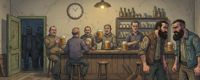 | Pás 04-kolo
apps/web/src/stranky/pravidla-obrazky/04-kolo.jpg | Pásy pravidiel | 1 | Svetlejší béžový interiér; v norme. | – | nechať |
| Pás 05-ciel-a-senok
apps/web/src/stranky/pravidla-obrazky/05-ciel-a-senok.jpg | Pásy pravidiel | 1 | V norme. | – | nechať |
| Pás 06-zhromazdenie
apps/web/src/stranky/pravidla-obrazky/06-zhromazdenie.jpg | Pásy pravidiel | 1 | V norme, postavy sa líšia. | – | nechať |
| Pás 08-cena-pitia
apps/web/src/stranky/pravidla-obrazky/08-cena-pitia.jpg | Pásy pravidiel | 1 | V norme (dym z popolníka). | – | nechať |
| Pás 10-starsi-a-prebytok
apps/web/src/stranky/pravidla-obrazky/10-starsi-a-prebytok.jpg | Pásy pravidiel | 1 | V norme. | – | nechať |
| Pás 11-kliatby
apps/web/src/stranky/pravidla-obrazky/11-kliatby.jpg | Pásy pravidiel | 1 | V norme. | – | nechať |
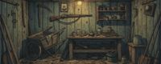 | Pás 12-nastroje
apps/web/src/stranky/pravidla-obrazky/12-nastroje.jpg | Pásy pravidiel | 1 | V norme, svetlejšia dielňa. | – | nechať |
| Pás 13-pokrocile-tahy
apps/web/src/stranky/pravidla-obrazky/13-pokrocile-tahy.jpg | Pásy pravidiel | 1 | V norme. | – | nechať |
| Pás 15-bodovanie
apps/web/src/stranky/pravidla-obrazky/15-bodovanie.jpg | Pásy pravidiel | 1 | V norme. | – | nechať |
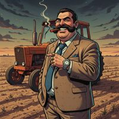 | Starosta
packages/server/seed/karty/starosta.jpg | Karty – Starešinovia | 1 | Teplé denné svetlo nad poľom, o stupeň svetlejšie než vzory; inak sedí. | – | nechať |
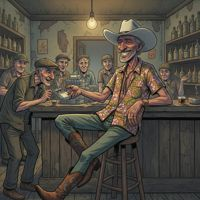 | Strýko z Ameriky
packages/server/seed/karty/stryko_z_ameriky.jpg | Karty – Občania | 1 | Teplý interiér, mierne čistejšia linka; v norme. | – | nechať |
| Telefón
packages/server/seed/karty/telefon.jpg | Karty – Nástroje | 1 | Zátišie, svetlejšia tapeta; v norme. | – | nechať |
| Traktorista
packages/server/seed/karty/traktoristka.jpg | Karty – Občania | 1 | Tmavá noc, sedí; čistejšia linka. | – | nechať |
| Valaška
packages/server/seed/karty/boxer.jpg | Karty – Nástroje | 1 | Zátišie (Valaška), v norme. | – | nechať |
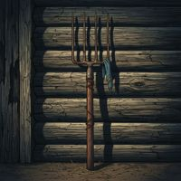 | Vidly
packages/server/seed/karty/vidly.jpg | Karty – Nástroje | 1 | Zátišie, tenšia linka; v norme. | – | nechať |
| Vymáhač
packages/server/seed/karty/vymahac.jpg | Karty – Občania | 1 | Čistejšia linka, menej zrna; v norme. | – | nechať |
| Vínko
packages/server/seed/karty/vinko.jpg | Karty – Nástroje | 1 | Zátišie, hladšia kresba; v norme. | – | nechať |
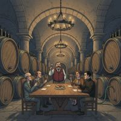 | Vínna pivnica
packages/server/seed/karty/vinna_pivnica.jpg | Karty – Lokality | 1 | Teplá, čistejšia; v norme. | – | nechať |
| Výherné žreby
packages/server/seed/karty/vyherne_zreby.jpg | Karty – Nástroje | 1 | Prázdna horná polovica, slabý motív; v norme. | – | nechať |
| Výherný automat
packages/server/seed/karty/vyherny_automat.jpg | Karty – Nástroje | 1 | Zátišie, „777“ na valcoch (symboly, nie text); v norme. | – | nechať |
| Zapaľovač
packages/server/seed/karty/zapalovac.jpg | Karty – Nástroje | 1 | Zátišie, dym z cigarety v popolníku; sedí. | – | nechať |
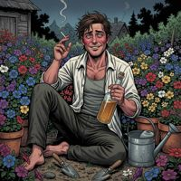 | Záhradkár
packages/server/seed/karty/zahradkar.jpg | Karty – Občania | 1 | Pestré sýte kvety, svetlejšie; v norme. | – | nechať |
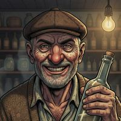 | avatar-01
packages/server/seed/avatary/avatar-01.jpg | Avatary | 1 | Sada portrétov: tenšia linka a menej zrna než karty, ale konzistentná a tlmená. | – | nechať |
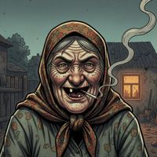 | avatar-02
packages/server/seed/avatary/avatar-02.jpg | Avatary | 1 | Sada portrétov: tenšia linka a menej zrna než karty, ale konzistentná a tlmená. | – | nechať |
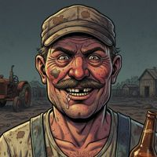 | avatar-03
packages/server/seed/avatary/avatar-03.jpg | Avatary | 1 | Sada portrétov: tenšia linka a menej zrna než karty, ale konzistentná a tlmená. | – | nechať |
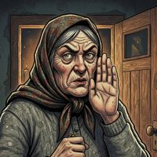 | avatar-04
packages/server/seed/avatary/avatar-04.jpg | Avatary | 1 | Sada portrétov: tenšia linka a menej zrna než karty, ale konzistentná a tlmená. | – | nechať |
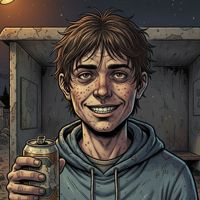 | avatar-06
packages/server/seed/avatary/avatar-06.jpg | Avatary | 1 | Sada portrétov: tenšia linka a menej zrna než karty, ale konzistentná a tlmená. | – | nechať |
| avatar-07
packages/server/seed/avatary/avatar-07.jpg | Avatary | 1 | Kreslenejšia (cartoon) tvár s otvorenými ústami; v norme sady. | – | nechať |
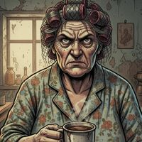 | avatar-08
packages/server/seed/avatary/avatar-08.jpg | Avatary | 1 | Sada portrétov: tenšia linka a menej zrna než karty, ale konzistentná a tlmená. | – | nechať |
| avatar-09
packages/server/seed/avatary/avatar-09.jpg | Avatary | 1 | Sada portrétov: tenšia linka a menej zrna než karty, ale konzistentná a tlmená. | – | nechať |
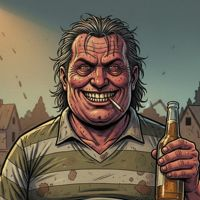 | avatar-10
packages/server/seed/avatary/avatar-10.jpg | Avatary | 1 | Sada portrétov: tenšia linka a menej zrna než karty, ale konzistentná a tlmená. | – | nechať |
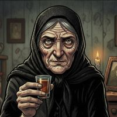 | avatar-11
packages/server/seed/avatary/avatar-11.jpg | Avatary | 1 | Sada portrétov: tenšia linka a menej zrna než karty, ale konzistentná a tlmená. | – | nechať |
| avatar-12
packages/server/seed/avatary/avatar-12.jpg | Avatary | 1 | Sada portrétov: tenšia linka a menej zrna než karty, ale konzistentná a tlmená. | – | nechať |
| avatar-13
packages/server/seed/avatary/avatar-13.jpg | Avatary | 1 | Sada portrétov: tenšia linka a menej zrna než karty, ale konzistentná a tlmená. | – | nechať |
| avatar-14
packages/server/seed/avatary/avatar-14.jpg | Avatary | 1 | Sada portrétov: tenšia linka a menej zrna než karty, ale konzistentná a tlmená. | – | nechať |
| avatar-15
packages/server/seed/avatary/avatar-15.jpg | Avatary | 1 | Kreslenejšia tvár, hladšia; v norme sady. | – | nechať |
| avatar-16
packages/server/seed/avatary/avatar-16.jpg | Avatary | 1 | Sada portrétov: tenšia linka a menej zrna než karty, ale konzistentná a tlmená. | – | nechať |
| avatar-17
packages/server/seed/avatary/avatar-17.jpg | Avatary | 1 | Sada portrétov: tenšia linka a menej zrna než karty, ale konzistentná a tlmená. | – | nechať |
| avatar-18
packages/server/seed/avatary/avatar-18.jpg | Avatary | 1 | Sada portrétov: tenšia linka a menej zrna než karty, ale konzistentná a tlmená. | – | nechať |
| avatar-19
packages/server/seed/avatary/avatar-19.jpg | Avatary | 1 | Sada portrétov: tenšia linka a menej zrna než karty, ale konzistentná a tlmená. | – | nechať |
| avatar-20
packages/server/seed/avatary/avatar-20.jpg | Avatary | 1 | Sada portrétov: tenšia linka a menej zrna než karty, ale konzistentná a tlmená. | – | nechať |
| bot bozena
packages/server/seed/avatary/boti/bozena.jpg | Avatary botov | 1 | Bajtovo zhodný súbor s teta_gizka.jpg (zámer, Michal 2026-11-06). Gizka je vyradená povaha. | – | nechať |
| bot darina
packages/server/seed/avatary/boti/darina.jpg | Avatary botov | 1 | Nová podobizeň: leopardia teplákovka, mejkap („hot chick“); kovová ruka drží samostatný kohútik bez potrubia – zámerný vtip, ale zvláštny predmet. | – | nechať |
| bot igor
packages/server/seed/avatary/boti/igor.jpg | Avatary botov | 1 | Nová podobizeň povahy: kyborg v teplákovke, sedí so sadou botov; o niečo hladšia. | – | nechať |
| bot rapavy_fero
packages/server/seed/avatary/boti/rapavy_fero.jpg | Avatary botov | 1 | Kyborg (zámer – bot), konzistentný s ostatnými botmi. | – | nechať |
 | bot rudo
packages/server/seed/avatary/boti/rudo.jpg | Avatary botov | 1 | Bajtovo zhodný súbor s rapavy_fero.jpg (Michal 2026-11-06: Rudo dostal obrázok pôvodného Fera). Fero je vyradená povaha, klon v hre nevidno vedľa seba. | – | nechať |
| bot stamgast
packages/server/seed/avatary/boti/stamgast.jpg | Avatary botov | 1 | Kyborg (zámer – bot), sedí so sadou. | – | nechať |
 | bot teta_gizka
packages/server/seed/avatary/boti/teta_gizka.jpg | Avatary botov | 1 | Kyborg (zámer – bot), sedí so sadou. | – | nechať |
| Absťák
packages/server/seed/karty/abstak.jpg | Karty – Kliatby | 0 | Sedí: šero, lampa, zrno. | – | nechať |
| Autobusár
packages/server/seed/karty/autobusar.jpg | Karty – Starešinovia | 0 | Sedí: tmavý interiér autobusu, zlato, zrno. | – | nechať |
| Cintorín
packages/server/seed/karty/cintorin.jpg | Karty – Lokality | 0 | Sedí. | – | nechať |
| Dvojčatá
packages/server/seed/karty/dvojcata.jpg | Karty – Občania | 0 | Sedí (zhoda tvárí je zámer – dvojčatá). | – | nechať |
| Hasič
packages/server/seed/karty/hasic.jpg | Karty – Občania | 0 | Sedí (dym z požiaru). | – | nechať |
| Jednota
packages/server/seed/karty/jednota.jpg | Karty – Lokality | 0 | Sedí. | – | nechať |
| Kostol
packages/server/seed/karty/kostol.jpg | Karty – Lokality | 0 | Sedí: búrka, šero, kontúra. | – | nechať |
| Kočovník
packages/server/seed/karty/kocovnik.jpg | Karty – Občania | 0 | Vzor štýlu (modrejší, pestrejší podľa vlastného promptu); v rohu podpis. | – | nechať |
| Krčmárka
packages/server/seed/karty/krcmarka.jpg | Karty – Starešinovia | 0 | Vzor štýlu. | – | nechať |
| Kôň
packages/server/seed/karty/kon.jpg | Karty – Zvieratá | 0 | Sedí. | – | nechať |
| Milujúca manželka
packages/server/seed/karty/milujuca_manzelka.jpg | Karty – Občania | 0 | Sedí: groteskná tvár, šero. | – | nechať |
| Miňištrant
packages/server/seed/karty/ministrant.jpg | Karty – Občania | 0 | Sedí (dym z cigarety). | – | nechať |
| Pes
packages/server/seed/karty/pes.jpg | Karty – Zvieratá | 0 | Sedí. | – | nechať |
| Pijan
packages/server/seed/karty/pijan.jpg | Karty – Občania | 0 | Sedí. | – | nechať |
| Podvodník
packages/server/seed/karty/podvodnik.jpg | Karty – Občania | 0 | Vzor štýlu. | – | nechať |
| Pozadie kmotor
packages/server/seed/bodovanie/pozadia/kmotor.jpg | Pozadia bodovacích kariet | 0 | Pozadie: lampa, sviečka, trezor so zlatom; sedí. | – | nechať |
| Poštárka
packages/server/seed/karty/postarka.jpg | Karty – Starešinovia | 0 | Vzor štýlu. | – | nechať |
| Pás 09-bitka
apps/web/src/stranky/pravidla-obrazky/09-bitka.jpg | Pásy pravidiel | 0 | Sedí. | – | nechať |
| Recidivista
packages/server/seed/karty/recidivista.jpg | Karty – Zvieratá | 0 | Sedí. (V zverejnenej sade má teraz tag Zviera, preto skupina Zvieratá.) | – | nechať |
| Stryná
packages/server/seed/karty/niekoho_stryna.jpg | Karty – Občania | 0 | Vzor štýlu. | – | nechať |
| Svokra
packages/server/seed/karty/svokra.jpg | Karty – Občania | 0 | Sedí. | – | nechať |
| Veterinár
packages/server/seed/karty/veterinar.jpg | Karty – Starešinovia | 0 | Vzor štýlu: hrubá kontúra, zrno, tlmené farby, teplá lampa. | – | nechať |
| Veterán
packages/server/seed/karty/veteran.jpg | Karty – Občania | 0 | Sedí. | – | nechať |
| Veštica
packages/server/seed/karty/vestica.jpg | Karty – Občania | 0 | Sedí: sviečky, teplé svetlo, groteska. | – | nechať |
| Zámočník
packages/server/seed/karty/zamocnik.jpg | Karty – Občania | 0 | Vzor štýlu; v rohu drobná čmáranica podpisu. | – | nechať |
| Čierna mačka
packages/server/seed/karty/cierna_macka.jpg | Karty – Zvieratá | 0 | Sedí: nočná nálada, hrubá linka. | – | nechať |
| Šarlatán
packages/server/seed/karty/sarlatan.jpg | Karty – Občania | 0 | Sedí. | – | nechať |
| Živnostník
packages/server/seed/karty/zivnostnik.jpg | Karty – Občania | 0 | Sedí; v rohu drobný podpis. | – | nechať |